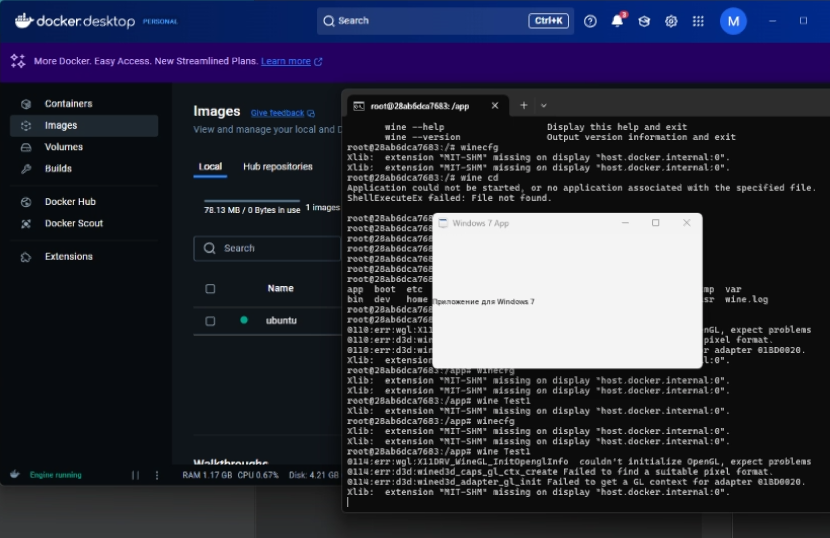

Контейнеризация как средство переносимости программного обеспечения
Контейнеризация — это технология упаковки программного обеспечения и его зависимостей в единый изолированный блок, называемый контейнером. Это позволяет запускать приложение одинаково на различных системах без необходимости модификации исходного кода.

Почему важна переносимость ПО?
Современные компании работают в условиях разнообразных операционных систем, облаков и серверных окружений. Обеспечение того, чтобы приложения могли без проблем запускаться в любом из них, критично для масштабируемости и устойчивости бизнес-процессов.
Контейнеры позволяют разработчику один раз собрать приложение и уверенно запускать его в любых средах: от локального компьютера до кластера в облаке.
Как работает контейнеризация?
Контейнер включает в себя приложение, все его зависимости (библиотеки, инструменты, настройки) и запускается в изолированной среде с использованием ядра ОС хоста.
Популярные инструменты, такие как Docker, позволяют легко создавать и управлять контейнерами. Контейнеры легковесны по сравнению с виртуальными машинами, поскольку не содержат полноценную ОС.

Примеры использования
- Запуск устаревших Windows-приложений в Linux при помощи WINE внутри Docker-контейнера.
- Тестирование приложений в разных окружениях (Python 3.10, 3.11 и т.д.) без установки их на основной хост.
- Организация CI/CD: автоматическая сборка и доставка ПО в единых контейнерах.

Преимущества и недостатки контейнеризации
Преимущества
- ✅ Упрощение развертывания ПО
- ✅ Повышение переносимости между платформами
- ✅ Экономия системных ресурсов
- ✅ Легкость масштабирования
- ✅ Упрощённая поддержка и обновления
Недостатки
- ❌ Меньшая изоляция по сравнению с виртуальными машинами
- ❌ Сложности с доступом к аппаратным ресурсам (например, GPU)
- ❌ Проблемы с запуском GUI-приложений
Реальный пример: запуск устаревшего ПО в Docker
В процессе модернизации IT-инфраструктуры возникает проблема совместимости устаревших Windows-приложений с современными ОС. Одним из решений стало использование WINE внутри контейнера Docker на базе Ubuntu. Это позволило запустить Windows 7-приложение без полной виртуализации.
Было протестировано несколько подходов:
- Контейнеры Windows на базе Nano Server — несовместимы с Windows 7-приложениями.
- Гибрид с Windows Sandbox — слишком ресурсоемкий и плохо масштабируемый.
- WINE внутри Linux-контейнера — оптимальный компромисс по совместимости, скорости и простоте.
Процесс включал установку Xming на хосте для графического вывода, настройку окружения, установку WINE и запуск программы. Это дало возможность сохранять работоспособность старых систем без переписывания кода или эмуляции всей ОС.
Выводы
Контейнеризация — это мощный инструмент, обеспечивающий переносимость, масштабируемость и надёжность программного обеспечения. Она позволяет компаниям ускорить доставку продуктов, упростить тестирование и сократить издержки на инфраструктуру.
Пример с запуском Windows 7-приложения в контейнере Ubuntu с использованием WINE показал, что даже устаревшее ПО может эффективно работать в современных условиях, без необходимости полной виртуализации или переписывания кода. Такой подход особенно актуален в организациях, где критично сохранить старый функционал.
Несмотря на определённые ограничения (графический вывод, лицензирование Windows, настройка X-сервера), контейнеризация уже сегодня является практичным решением для многих задач, а в будущем можно ожидать появления специализированных контейнеров с полной поддержкой Windows API и упрощённой графической интеграцией.